Ice Blue
Ice-blue body, cobalt panes, mint and teal.
Download master PNG ↗1024 px PNG ↗
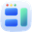
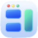
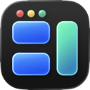
BetterTileView website ↗Brand studio / Working proposal / 3 October 2026
A connected identity for BetterTile, built around the moment two windows move together. Proposed assets only; the native app has not been changed.
Current Ice Blue and Dark icons, exported from the native Icon Composer documents.
Ice-blue body, cobalt panes, mint and teal.
Download master PNG ↗1024 px PNG ↗

Dark body, cobalt panes, mint and teal.
Download master PNG ↗1024 px PNG ↗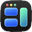
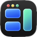
These transparent PNGs come from the current native icon exports. Their editable source is in Resources/AppIconIce.icon and Resources/AppIconDark.icon. Earlier vector explorations remain below for reference.
01 / Three directions
An earlier direction with pitch black fading into cobalt, open frames, and one active teal boundary. The interface explains the identity; the identity explains the interface.
Inter · Precise / spacious / connected
A cool, bright editorial direction with an adaptable frame. Spacious and approachable, with less connection to the current dark app icon.
Instrument Serif + Inter · Editorial / airy / thoughtful
A compact typographic mark and monochrome utility language. Precise, but less welcoming and less direct about linked resizing.
System sans + mono labels · Compact / focused / direct
02 / Symbol explorations
Three original constructions. Earlier vector studies. The Midnight website now uses the supplied glass icon, shown above.
Two open brackets and a taller common edge. Recognizable in one color. The gap stays useful at small sizes.
An offset frame makes room for another shape. More architectural, but less immediately about linked movement.
A drawn B and T share a baseline. Name-dependent, with less visual separation at menu-bar sizes.
03 / Developed identity
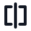
Monochrome
Reversed
The 16 px version uses a separate pixel-aligned drawing. Core silhouette tested without blur, gradients, or animation. Menu bar uses one opaque color.
A little more room.
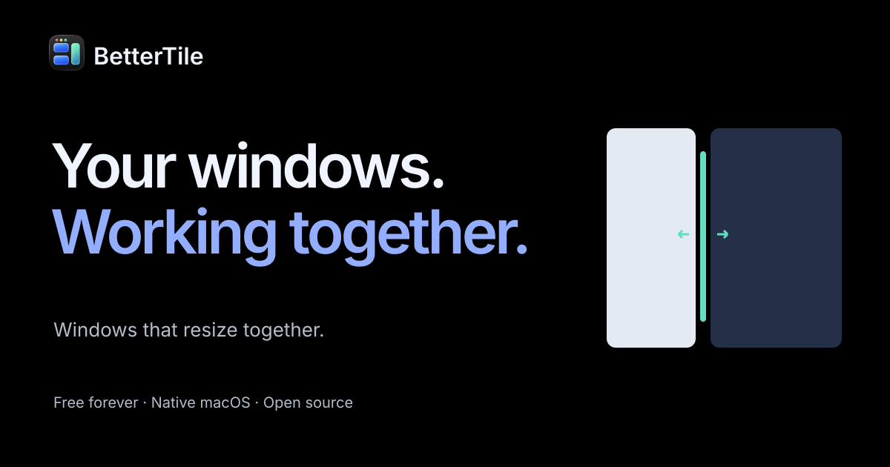
SVGs are editable. Wordmark files use Inter; the font and OFL license are bundled. The complete set also includes white and small-size symbols.
04 / Naming recommendation
The name is clear, easy to say, and already belongs to this product’s public history. The “Better” prefix is less distinctive beside BetterTouchTool and BetterSnapTool. A recognizable shared-boundary identity is a stronger immediate change than a rename with unresolved conflicts.
PAYN-hay-vən
A calm home for windows. Clear connection, but long and close to an existing creative title. The .com is registered.
TAN-droh
Tandem + row. Short and active. Similar to the existing Tandro app and its pending US software trademark; not recommended.
tess-OON
Tessellation + attune. Distinctive sound, less obvious meaning. Nearby Tessuno software and a registered .com remain concerns.
Exploratory previews, not an official rename. Limited searches are not trademark clearance or proof of domain availability. Read all 12 candidates, evidence, and limitations
05 / Brand foundation
Keep your windows working together, so your attention can stay on the work.
Precise. Calm. Approachable.
Say what happens. Explain the next move. Prefer concrete verbs and honest beta details to performance claims.
A shared edge. Repeated in the mark, the active boundary, paired compositions, and coordinated motion.
Review materials